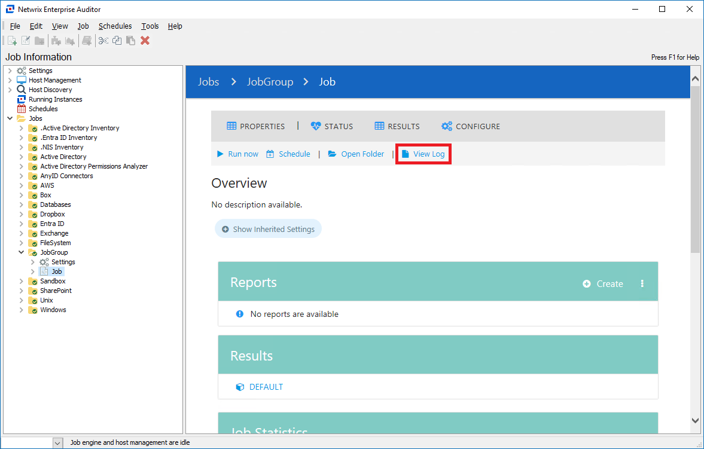
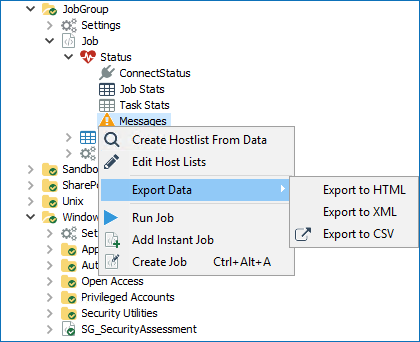

Overview
This article provides guidance on collecting logs and other relevant information when submitting a support ticket for Netwrix Enterprise Auditor (NEA), formerly StealthAUDIT.
Instructions
Follow the steps below to gather the necessary logs and details required for troubleshooting your NEA instance.
Logs
Follow these steps to gather logs:
-
Depending on your current AIC version, refer to one of the following default paths:
-
AIC v11.5:
C:\inetpub\wwwroot\StealthAUDIT Compliance\ -
AIC v11.6:
C:\Program Files\STEALTHbits\Access Information Center
-
-
Navigate to the following path to collect the NEA Console logs:
%SAInstallDir%SADatabase\Logs\Application -
Gather the Published Reports logs from the following path:
%SAInstallDir%SADatabase\Logs\Web -
Collect the job logs using one of the following methods:
-
On the home page of the job, click View Log, and save the log file.
 -
Locate the job logs using the following path:
%SAInstallDir%Jobs\%GROUP%\%JOB%\OUTPUTNOTE: Replace
%GROUP%and%JOB%with the appropriate values. For example, to locate logs for the1-AD_Scanjob, use the following path:%SAInstallDir%\Jobs\GROUP_.Active Directory Inventory\JOB_1-AD_Scan\OUTPUT -
In the Navigation Pane, right-click the job and select Export. In the new window, specify the components to export and proceed with the export.

-
Messages Table
To export job errors and warnings from the Messages table, proceed to the Navigation Pane, right-click %JOB%\Status\Messages and select Export > Export to XML.
Product Build Number
IMPORTANT: Identifying your current NEA build helps determine whether the issue has already been addressed in a newer version. Follow the steps below to establish the build number in your NEA instance.
-
In NEA v11.5:
-
In Control Panel, open the Programs and Features menu. Locate the NEA line and review the Version column value.
-
In the Apps & Features menu, highlight the NEA entry and review the version.
-
-
In NEA v11.6:
-
Navigate to Help > About in the top toolbar.
-